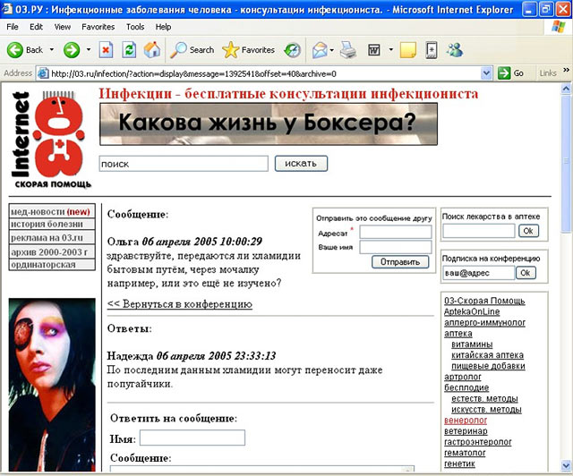
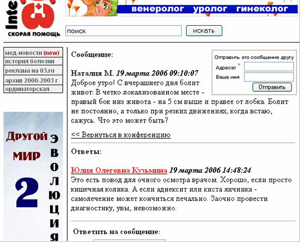
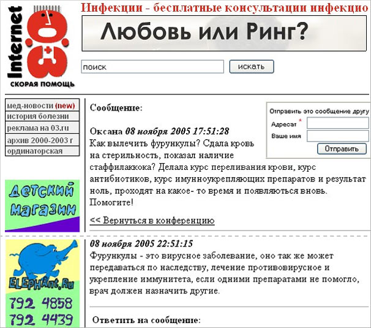

Всё больше медицинских сайтов проводят онлайн консультации пациентов. Стоит ли доверять советам и рекомендациям подобных специалистов? Об этом наш сегодняшний рассказ, на примере одного из известных российских медицинских порталов.
Вы использовали Интернет для письма, чтения, знакомства, для передачи файлов и получения счетов, для покупки новой кошачьей миски, для поздравления тёщи, для виртуальной исповеди, для уничтожения межгалактической империи Васи из соседнего подъезда, для победы в конкурсе «Лучший реферат школы» за своего ребёнка, для того чтобы узнать, что Маша тоже снималась в любительском кино? Вы много времени проводите за компьютером, так что вам некогда даже по-человечески поболеть и совершенно нет времени сходить к врачу? Ерунда, теперь и это можно сделать, не отходя от мыши. Множится число сайтов, где в режиме реального времени можно проконсультироваться не просто с врачом, а с узким специалистом, и получить совет высококвалифицированного доктора совершенно бесплатно. Последнее немаловажно. Если в провинции ещё можно получить бесплатный совет врача, то для москвичей подобные сайты реально экономят семейный бюджет. Например, сайт www.03.ru (www.doctor.ru) имеет в своём штате 65 специалистов, в том числе таких как диабетолог, гинеколог, проктолог. Это мощная команда сравнима разве только с крупной ФСБэшной поликлиникой. Для справки, согласно инструкциям Минздрава, 1 проктологическая ставка формируется в расчёте на 100000 жителей, таким образом, сельским гражданам и обитателям Севера за всю свою жизнь не придётся встретиться с таким важным специалистом. И будет болезнь, да показать и рассказать про неё некому. Интернет в подобных случаях чрезвычайно полезен. Служил Гаврила сисадмином, Гаврила байты отправлял…
Поколение врачей, воспитанных советской пропедевтикой, знает, что на 50% диагноз формируется на основании анамнеза. Тщательная, направляемая врачом беседа способна извлечь поток информации, из которого можно будет слепить диагноз не только обратившемуся за помощью, но и его жене, любовнице, тёще, соседу и начальнику. Вернувшись к нашим проктологам, скажу, что жалобы и развитие таких страданий как геморрой, парапроктит и анальная трещина, совершенно различны. В срочных случаях заподозрить их можно и без пальцевого обследования прямой кишки (пока ещё не доступного по сети). Именно этот самый анамнез и находиться в распоряжении врачей-консультантов. И как же распоряжаются своими светлыми головами наши невидимые on-line эскулапы? Может быть, вместо очередей и талончиков «кликнем» на нужном специалисте? Не станем пока рисковать своим здоровьем, посмотрим, как лечат других.
Несколько примеров:
Ситуация 1. Как передаются хламидии?

Прекрасный ответ опытного венеролога! Только вот непонятно можно ли всё-таки заразиться бытовым путём через мочалку, как планирует пациентка, про попугаев никто не спрашивает вообще. Что значит «даже попугайчики», то есть остальные и подавно? Хомячки? Аквариумные рыбки? А если сделать мочалку из хомячка? А если вступить в бытовой контакт с аквариумной рыбкой? Вам не приходят на ум ассоциации с птичьим гриппом? Избавьтесь немедленно от домашних любимцев! Заметим, что на грамотный ответ ушло 13 часов, вполне on-line.
Ситуация 2. Боли внизу живота

Прекрасный ответ опытного хирурга! Пациент сообщает о боли в точке МакБурнея, патогномоничной для острого аппендицита и сроке заболевания больше 12 часов. Острый аппендицит занимает до 40% всей ургентной патологии брюшной полости, но мысль консультанта упорно уходит в гинекологическую степь. От кисты пациентка, скорее всего, не умрёт, а вот у аппендицита стабильная летальность 0,2%. Учитывая огромное число случаев, это десятки и сотни жизней. Никаких советов, рекомендаций обратиться к врачу, само рассосётся. Очень радует, что на ответ ушло всего 4 часа 48 минут.
Ситуация 3. Как вылечить фурункулы?

Прекрасный ответ опытного дерматолога! То, что фурункулёз имеет вирусную этиологию — известный факт. Зачем писать об этом снова и снова? Просто посоветуйте какой-нибудь ацикловир, а может, для профилактики подойдёт римантадин? Так как это наследственная патология, то пациентке Оксане необходимо перестать размножаться, чтобы избавить мир от страшной болезни, а если она не в состоянии себя контролировать, то нужна стерилизация. Заметьте — какая гениальная фраза насчёт того, что врач должен назначить другие препараты при неэффективности первых! Очевидно, это часто происходит при лечении вирусного фурункулёза. Эту патологию просто так не одолеешь. На раздумья у дерматолога ушло 5 часов.
Вы можете продолжить, самостоятельно посетив любой подобный сайт. Поначалу глаза будут выхватывать всю чушь, но со временем вы привыкнете и станете замечать только откровенный бред. Служил Гаврила психиатром, Гаврила слышал голоса…
Во всех ответах консультантов содержится немалое число грамматических ошибок. Специалисты бывают на сайте нерегулярно, и ждать ответа приходится от нескольких часов до суток. Многие экстренные случаи вообще остаются без внимания. А самый толковый ответ, который встречается в переписке с травматологом, заключался во фразе «обратитесь к врачу». Действительно, кто скрывается по ту сторону экрана? Врачи? Возможно, всего лишь генератор случайных имён и фотографий консультантов и такой же генератор случайных слов, когда дело доходит до ответов пациентам. Некие Гаврилы, которые по очереди отвечают в разных рубриках? Служил Гаврила терапевтом, Гаврила «Лазикс» принимал… Уважаемые посетители подобных сайтов! Помните, что кроме неподконтрольных on-line докторов, есть и обычные off-linовые. Вы всегда можете вызвать скорую помощь, посетить поликлинику, обратиться за помощью. Уважаемые консультанты, пожалуйста, не блистайте интеллектом и не излечивайте массы одним предложением. Просто направьте пациентов к нужному специалисту.
В.В. Привольнев